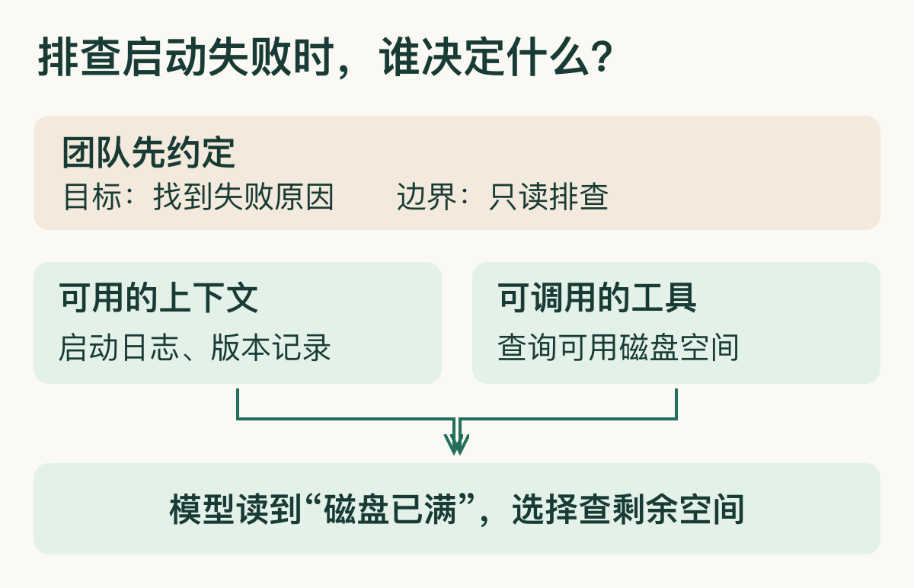

让前沿模型根据现场证据选择测试的下一步
假设你在测一个设置页。你关掉消息提醒，点了保存，再打开页面，开关却还开着。现在就报一个 bug，还是先看一眼刚才到底有没有保存成功？
最近，我们团队在试着把这样的工作交给前沿模型。我们给它一条用日常语言写的测试用例，让它在测试环境里动手操作，再判断功能是否符合预期。用例可以写得很清楚，比如“关闭提醒后，重新进入页面，开关应保持关闭”。可真碰上刚才那一幕，模型接下来该做什么？
我们最早的做法，是把下一步也设计好。团队搭了一条测试流水线，把准备环境、操作页面、检查结果这些事一段段接起来。作为工程师，我至今很喜欢那张流程图。手指沿着线走，到一个分支停下来，都能说清楚为什么从这里往那边走。我觉得那里面有工程的美感。
难处也在那个开关上。要是保存请求已经失败了，让模型多等一会儿没什么用。要是页面还在显示旧数据，直接报错又太早。跑测试的人这时可以去看请求结果；写流程的人得提前想到这里有东西值得查，还得决定什么时候查。
遇到过的情况，我们当然能给它补个分支。难的是，写流程的那天，我们并不知道下一次会碰见哪些情况，更不知道它们会怎样凑在一起。即使过去遇见的每个问题都归纳得很好，也很难据此画出一条对新任务同样周全的路径。
上方是团队事先排好的步骤，下方是模型观察结果后再选动作的过程。
后来团队试着让模型自己决定动作顺序。人把什么算通过交代清楚，把工具交给它，通过 Skill 说明怎么准备环境、怎么读回结果。还是刚才的例子，如果模型可以先查保存状态，它就有机会在看到返回值之后，再决定该等、该重开页面，还是已经有足够证据判定失败。写流水线的人和正在执行的模型，作决定时手里的信息确实不一样。
说起来，换了跑法之后，我反而更能看出团队早先那些工程工作的价值。模型能查到状态，是因为团队先让工具具备了这项能力。它知道该查什么，是因为之前有人把环境摸清楚，把踩过的坑和解决办法写了下来。当初为了让流水线跑通做的那些事，到了这一版，很多都还用得上。
这也是我想用 Context, Not Control 做标题的原因。团队给模型一个明确的验收目标、一套能动手也能查证的工具，以及遇到问题时查得到的经验。至于眼前这个现象先查哪一项，让看得见现场的模型来选。哪些环境可以操作、什么证据足以判通过，依然得由团队负责。

两种跑法都用得上团队准备的环境、工具和执行知识。
在这批有限的试跑里，Tool + Skill 版本跑完了更多用例。按我们的初步观察，它对通过或失败的判断也更准确。碰到实在跑不下去的用例，它给出的解释大多让人觉得有道理。这些解释还需要拿着记录逐条核对，看看当时确实缺了条件，还是有件工具它没想到去用。
还有一个现象，比覆盖率更让我好奇。头一轮花了好几个小时。接下来的一轮明显缩短，再往后跑，又快了一些。
每轮跑完，都会留下一些下一轮用得上的东西。模型会根据现场情况分析问题，试出解法，有时顺手把一个操作写成脚本，有时改进已有工具，也会把什么条件下这个办法管用记下来。到了新任务，这些脚本、工具和经验都还在。上一次花时间才弄明白的事，下一次有了现成的起点。
这和我以前理解的“给系统补一个分支”有一点微妙的区别。补上分支以后，再碰到那个条件，程序就按我们写好的顺序走。留下一段脚本和它的适用条件，下一次的模型可以读一读，判断眼前是不是同一回事，再决定直接用、改一改，还是另想办法。模型在一次任务里形成的归纳，就这样有机会帮到另一个任务。哪些归纳值得长期保留，还得靠复核和后续使用来判断。

一种值得验证的复用方式：保留现场证据，复核解法，再交给后续任务试用。
我们目前只试了少量功能，每轮的难度也可能不同。单凭耗时变短，还说不清其中有多少是复用带来的。下一轮扩大样本时，我想挑一些可重复的任务，在相同起始状态下，分别开放和暂时收起之前积累的脚本与经验。看模型实际取用了什么，少做了哪些重复操作，再核对两边的验收判断。这样才有机会分清，它是真的省去了摸索，还是碰巧遇到了一个好跑的任务。
如果现在再和团队一起看那张流水线设计图，我大概还是会觉得它漂亮。只是看到一个空着的分支时，我会多问一句：我们现在就知道这里该怎么走，还是等模型把现场的状态读回来，会有更好的答案？